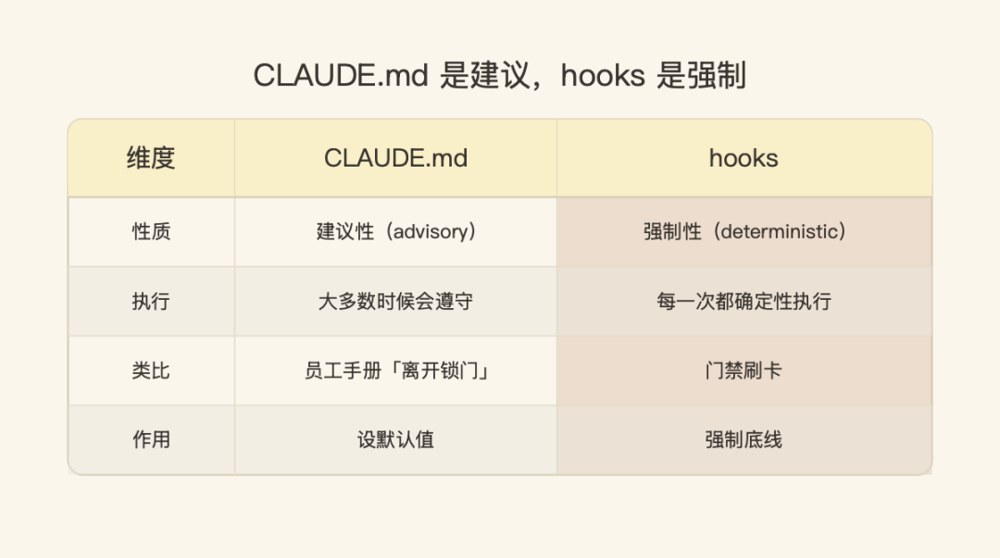
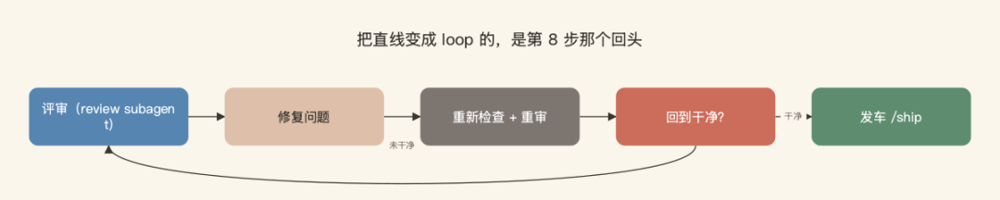

你大概也是这么用 Claude Code 的：敲一个需求，盯着它改文件，瞄一眼结果觉得差不多，再敲下一个。它确实能干活，但你始终不太敢走开——像盯着一个刚入职的实习生，怕它一脚踩空。
最近一篇在 X 上拿到五万多阅读的长文，把这件事讲透了。作者 0xMorty 的判断很直接：
"Most developers use Claude Code like a junior who needs constant supervision... But it's not what Claude Code is for."
大多数开发者把 Claude Code 当成一个需要时刻盯着的初级工程师……但这不是 Claude Code 真正该有的用法。
资深工程师不是这么干活的。他们先把代码库读懂，做一份计划，写改动，测试，对照团队规范做评审，确认无误才发布。这一整套动作，可以用 Claude Code 出厂自带的几个原语——plan mode、subagents、hooks、CLAUDE.md、slash command——拼成一个可复用的 9 步 loop。搭好一次，之后每个任务都跑同一条流水线。
他这句话才是全文的题眼：
"The difference isn't the model. It's the loop around it."
区别不在模型，而在围绕模型的那个循环。
下面先给一张 9 步全貌，再按"动手前 / 动手中 / 收尾"三段拆开讲。
| 步骤 | 用的原语 | 实习生 → 资深的差别 |
|---|---|---|
| 1 探索 | Explore subagent | 上来就改 → 先读懂代码库 |
| 2 定方案 | plan mode | 边写边想 → 先批准计划再动 |
| 3 立规范 | CLAUDE.md | 口头约定 → 每会话自动加载 |
| 4 小步建 | main session | 巨型 diff → 可评审小片段 |
| 5 焊底线 | hooks | 建议 → 每次必跑的强制 |
| 6 自证 | tests + hooks | "看着挺好" → 测试真过了 |
| 7 评审 | review subagent | 自己审自己 → 干净视角挑刺 |
| 8 闭环 | the loop | 改完就走 → 修到干净为止 |
| 9 发车 | slash command | 手工重组 → 一条命令跑完 |
一、动手之前：先读懂，再定方案，把规范摆上台面
第 1 步 · 先探索，再动手。 实习生的动作是上来就改，资深的动作是先理解代码库。Claude Code 内置了一个 Explore subagent，以只读模式、在自己独立的 context window 里读代码——既不污染你的主会话，也不冒任何改动风险。每个非琐碎任务都从派它去探索相关区域开始，它回来时是真懂了各部分怎么咬合，而不是靠猜。
这一步省下的东西比看起来多。装修前先把图纸看明白，和砌了一半墙才发现承重墙位置标错，是两种完全不同的成本。
第 2 步 · 在 plan mode 里把方案定下来。 plan mode 让 Claude 通盘想清整个方案而不执行任何东西，产出一份你能读、能改、能批准的逐步计划——这一切发生在任何文件被改动之前。糟糕的方案在这里免费死掉，而不是等它建到一半才暴露。资深习惯就一条：没看到计划、没点头之前，绝不让它开始建。
第 3 步 · 把规范写进 CLAUDE.md。 CLAUDE.md 是 agent 在你这个仓库里的"宪法"，它每个会话都会读这个文件，加载你的约定、命令和模式。资深工程师把团队规范烂熟于心，这就是你给 agent 同一个基线的方式。
但这里有个关键细节,作者自己也特意点了出来：
CLAUDE.md instructions are advisory. Claude follows them most of the time, but not with 100% reliability.
CLAUDE.md 里的指令是建议性的。Claude 大多数时候会遵守，但不是 100% 可靠。
记住这句话，下面第 5 步会回到它——这是整篇里我觉得最值得拎出来的一点。
二、动手之中：小步交付，把底线焊死，让它自己证明
第 4 步 · 拆成小的、可评审的片段来建。 计划批准、规范加载之后，build 这一步几乎是无聊的——而这正是重点。让 agent 把方案实现成一个个小的、自包含的片段，而不是一坨巨型 diff。道理你做过 code review 就懂：给你一个两千行的 PR，和给你五个两百行的 PR，哪个你敢说"我真看过了"。小改动易验证，出事也易回滚。
第 5 步 · 用 hooks 焊死不可商量的底线。 这一步把"真正的资深配置"和"打磨得很漂亮的实习生配置"区分开。hooks 是在 Claude Code 生命周期特定节点触发的 shell 命令，和 CLAUDE.md 不同，它每一次都确定性执行。"编辑后必跑 linter""绝不让带着失败测试的 commit 通过"——这些就从建议变成了保证。
回到第 3 步那个伏笔。CLAUDE.md 和 hooks 的关系，像员工手册和门禁刷卡：手册里写"离开锁门"，大家大概会照做，但你不会把真正不能让人进的机房交给一句手册——那得靠门禁，不靠自觉。CLAUDE.md 设默认值，hooks 强制底线。

这一条之前我在公众号专门写过一篇——《Claude Code 使用系列 01｜我用 hook 给 Claude 上了 4 道红绿灯》，里面就一句话能概括：CLAUDE.md 是建议，hook 是强制，这是 AI 工程化里很关键的一跳。很多团队把红线写进 CLAUDE.md 就以为安全了，其实只有 hook 卡得住。
第 6 步 · 让它证明改动真的有效。 资深工程师不信任没测过的代码，包括自己写的。让 agent 给每个改动写测试并运行，再配上第 5 步那个 hook，测试套件自动跑——于是"它能用"意味着测试真的通过了，而不是 diff 看起来像那么回事。"看着挺好"四个字，在这套流程里没有位置。
三、收尾闭环：换一双眼睛挑刺，循环到干净，一键发车
第 7 步 · 让第二个 agent 评审第一个。 code review 之所以有效，是因为评审的人没写这段代码。这一点可以复刻：起一个带干净 context window 的 review subagent，它唯一的工作就是批判这个改动。因为它有自己的上下文、又被赋予了批评者的角色，它能抓出建造者一路自我合理化、糊弄过去的东西。找个全程没参与项目的同事来挑刺，效果就来自他那份"我没有要维护自己面子"的干净。
第 8 步 · 修掉评审发现的问题，然后重新检查。 这一步才是让它成为 loop、而不是一条直线的地方。评审暴露问题，agent 修，然后检查和评审在修复后的版本上再跑一遍。不回到干净状态就不往前走。改 bug 从来不是改完就完——是改完、重测、重审，直到这一轮真的干净。

第 9 步 · 用一个 slash command 发车。 改动干净了就发布：一个清晰的 commit，一个带真实描述的 PR。资深的点睛之笔，是把这整个 9 步 loop 包成一个自定义 slash command，从此再也不用手工重新拼装。保存一次，一条命令触发整条流水线。作者给它起的名字是 /ship。
几条最值得记住的
读完整篇，真正值得记住的不是这 9 步本身——而是它背后的几个判断。
第一，区别真的不在模型。 这 9 步没有一步是技巧，全是资深工程师在每个任务上施加的同一套纪律，映射到 Claude Code 本就自带的原语上。模型一直都有能力，缺的是围绕它的那个 loop。这跟之前我写《loop engineering 来了？》那篇是同一个东西——Claude Code 负责人自己都已经不怎么 prompt、改用 loop 在干活了；区别只在他讲的是"为什么是 loop"，而 0xMorty 这篇讲的是"具体怎么把这个 loop 搭出来"。一个讲趋势，一个给清单，正好配成一套。
第二，advisory 和 deterministic 要分清楚。 这是我整篇最在意的一点。CLAUDE.md 是软的、hooks 是硬的——你越往团队规模上走，这个区分越重要。一个人用，规范靠自觉还能撑住；十个人、几十个 agent 一起跑，"自觉"就是漏洞。真正不能破的底线，必须有一层确定性的东西兜住，而不是写进一份"大概会遵守"的文档里。
第三，loop 和 line 的差别，就在第 8 步。 很多人搭出来的其实是条直线：探索、计划、写、测、审、发，一条道走到黑。把它变成环的，是"审出问题→修→再审→还不干净就再来"这个回头的动作。没有这个回头，前面八步只是一次性流程；有了它，才是一个能自我收敛的系统。
第四，subagent 的价值在"干净的上下文"。 不管是第 1 步的 Explore 还是第 7 步的 review，它们的威力都来自一件事：独立的 context window。探索的不带改动包袱，评审的不带"这是我写的"的护短。一个 agent 同时又写又审，等于让同一个人既当运动员又当裁判——隔离上下文，本质是把"屁股决定脑袋"这件事从流程里摘掉。
回到作者收尾那句：
"The model was always capable. What was missing was the loop around it."
模型一直都有能力，缺的从来是围绕它的那个循环。
这话反过来读更有杀伤力：当你觉得 Claude Code 不够聪明、总要盯着时，先别急着等下一代模型——大概率不是它不行，是你还没把那个 loop 搭起来。搭一次，之后每个任务都替你跑过它。